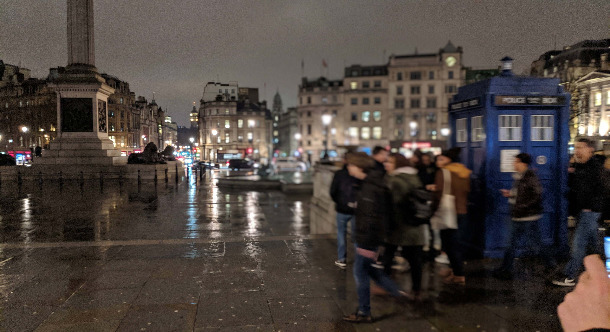

Cabine policial azul é vista aparecendo e desaparecendo no centro de Londres
Testemunhas afirmam que uma antiga cabine policial surgiu misteriosamente em Trafalgar Square e desapareceu poucos minutos depois.

Uma misteriosa cabine policial azul chamou a atenção de moradores e turistas em Trafalgar Square durante a noite. Segundo testemunhas, o objeto surgiu repentinamente por volta das 23h, acompanhado por um som incomum.
A Polícia Metropolitana recebeu dezenas de ligações sobre o caso. Quando os agentes chegaram ao local, porém, a cabine já havia desaparecido.
Nenhum rastro
No local foram encontradas apenas pequenas marcas circulares no asfalto e uma poça d'água. Algumas testemunhas também relataram falhas temporárias em celulares e relógios.
Imagens de segurança da região estão sendo analisadas. Até o momento, nenhuma explicação oficial foi apresentada.
“Ela estava ali e, de repente, simplesmente não estava mais.” — testemunha presente no local
As autoridades pedem que qualquer pessoa que tenha registrado o fenômeno envie as imagens para investigação.